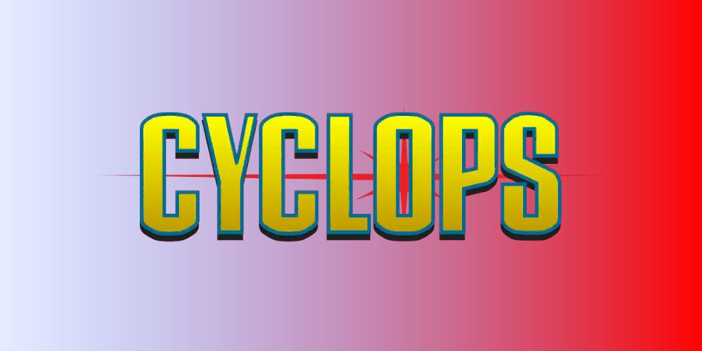
Cyclope (Scott Summers) (Terre-616)
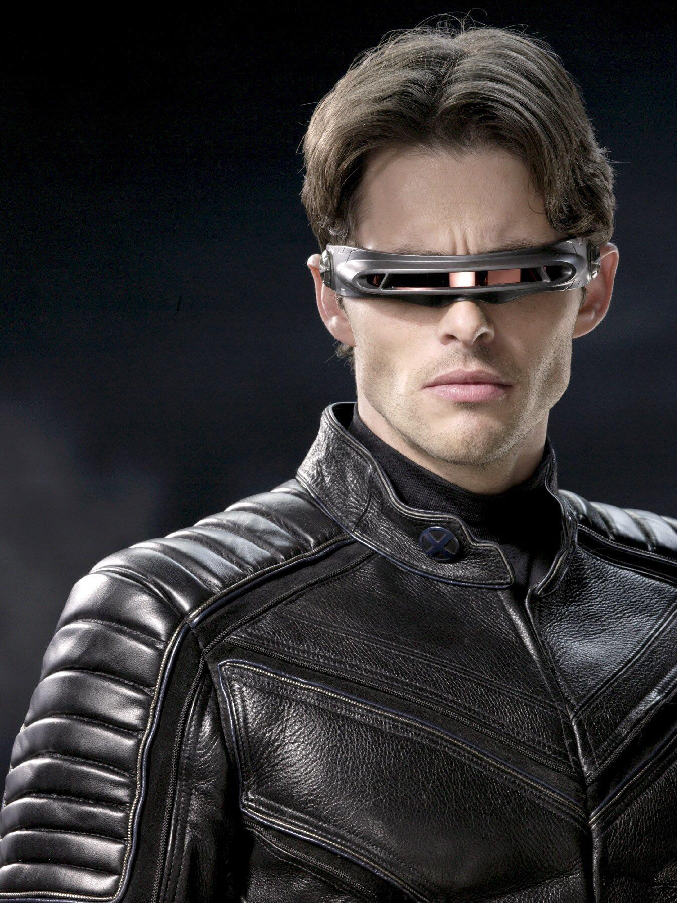
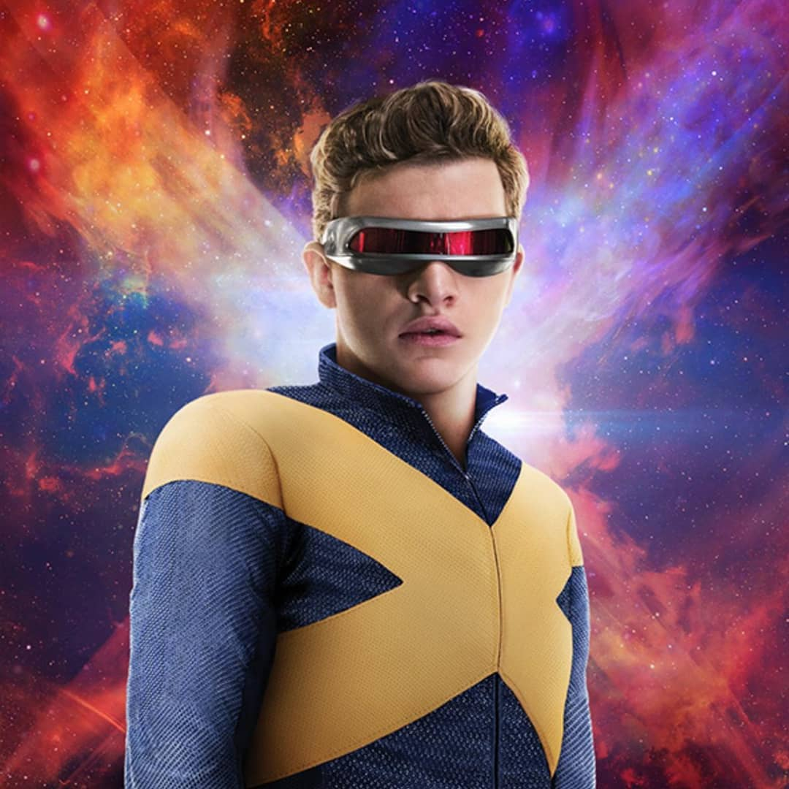
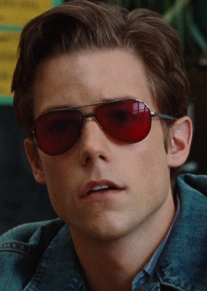
Origines :
Scott Summers est le fils aîné du major Christopher Summers, pilote d'essai dans l'US Air Force, et de son épouse Katherine Ann.
Son frère cadet, Alex, aussi connu sous le nom de Havok, est aussi un mutant.
Alors que Scott et Alex, encore enfants, rentraient de vacances en famille à bord du vieux jet privé de leur père, un vaisseau éclaireur de l’empire Shi'ar apparut soudainement et mit le feu à l'appareil.
Katherine les poussa hors de l'avion avec le seul parachute disponible, mais celui-ci prit feu et Scott utilisa pour la première fois ses rayons optiques, afin de ralentir leur descente.
Scott et Alex ignoraient que leurs parents avaient été téléportés hors de l'avion par les Shi'ar juste avant l'explosion de l'appareil.
Scott subit un traumatisme crânien à l'atterrissage, endommageant la partie de son cerveau qui lui permettait de contrôler ses rayons optiques.
Les deux frères ont été hospitalisés et ont tout deux souffert d'amnésie traumatique concernant l'incident.
Le généticien, qui se trouvait en réalité être Mr. Sinistre, s'est tout de suite intéressé aux garçons.
Convaincu que Scott était celui avec le plus de potentiel, il fit adopter Alex afin de les séparer et de rendre Scott émotionnellement vulnérable.
Une nuit, Scott se réveilla et détruisit le toit de l'hôpital d'un rayon optique. A son réveil suivant, un an s'était écoulé.
Une fois rétabli, Scott fut placé à l’orphelinat State Home for Foundlings d'Omaha, dans le Nebraska.
Là, il fut soumis à une batterie de tests et d'expériences par le propriétaire, M. Milbury, le nouvel alias de Mr. Sinistre.
Ce dernier lui imposa un contrôle mental et prit l'identité de « Lefty », son camarade de chambre qui le persécutait à l'orphelinat.
Sinister intervenait systématiquement dès que quelqu'un était sur le point d'adopter Scott.
A l'adolescence, Scott commença à souffrir de violents maux de tête et fut envoyé consulter un spécialiste (une nouvelle fois Sinister), qui lui fournit des lentilles en quartz rubis.
Peu après, son pouvoir mutant jaillit de ses yeux sous la forme d'une explosion incontrôlable.
L'explosion détruisit une grue, provoquant la chute de sa cargaison sur une foule terrifiée.
Scott parvint malgré tout à sauver tout le monde en pulvérisant l'objet d'un autre rayon optique avant qu'il ne s'écrase, mais les passants, croyant qu'il avait tenté de les tuer, se transformèrent en foule en colère, et Scott prit la fuite à bord d'un train de marchandises.
Scott fut ensuite approché par un mutant criminel, Jack O'Diamonds, qui chercha à exploiter les talents de Scott et le maltraita lorsque ce dernier refusa.
Cependant, la démonstration de puissance de Scott attira l'attention du mutant télépathe, le professeur Charles Xavier, qui s'allia à l'agent du FBI, Fred Duncan, pour le retrouver.
Scott fut sauvé des griffes des Winters et recruté par le Professeur Xavier comme premier membre des
X-Men, une équipe de jeunes mutants entraînés à maîtriser leurs pouvoirs par le professeur, dans l'optique de son rêve d'une égalité entre humains et mutants.
A l' École pour Jeunes Surdoués, les X-Men étaient encadrés par le Professeur X et entraînés à maîtriser leurs pouvoirs dans la Salle des Dangers.
Xavier fournit à Scott une visière en quartz rubis pour l'aider à contrôler ses pouvoirs sur le terrain.
Il prit le nom de Cyclope, et devint le chef adjoint des X-Men.
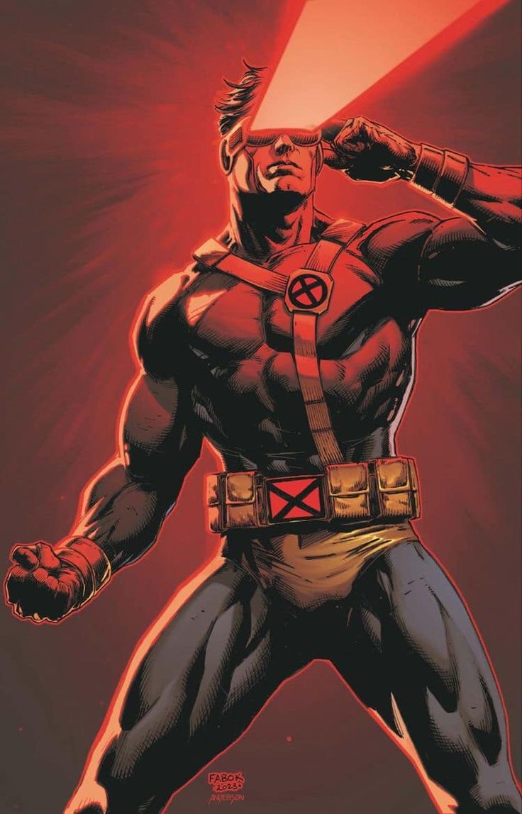
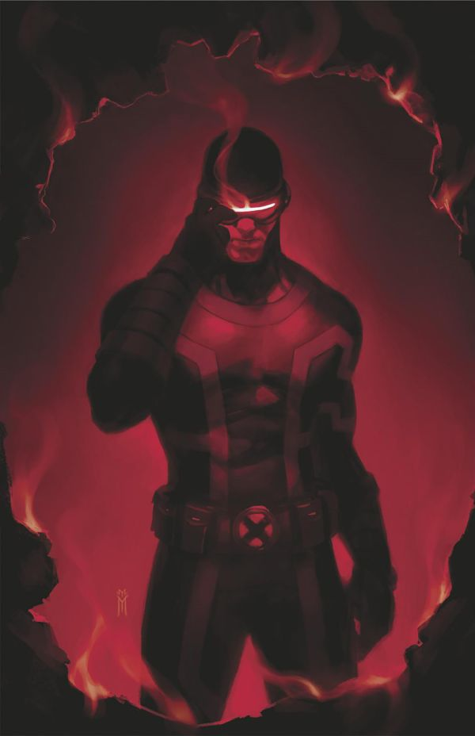
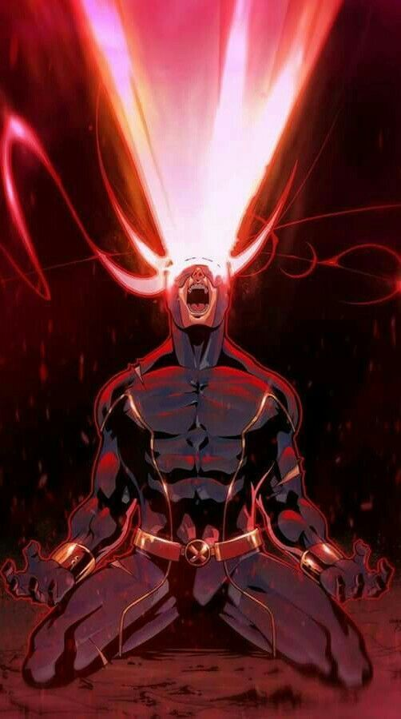
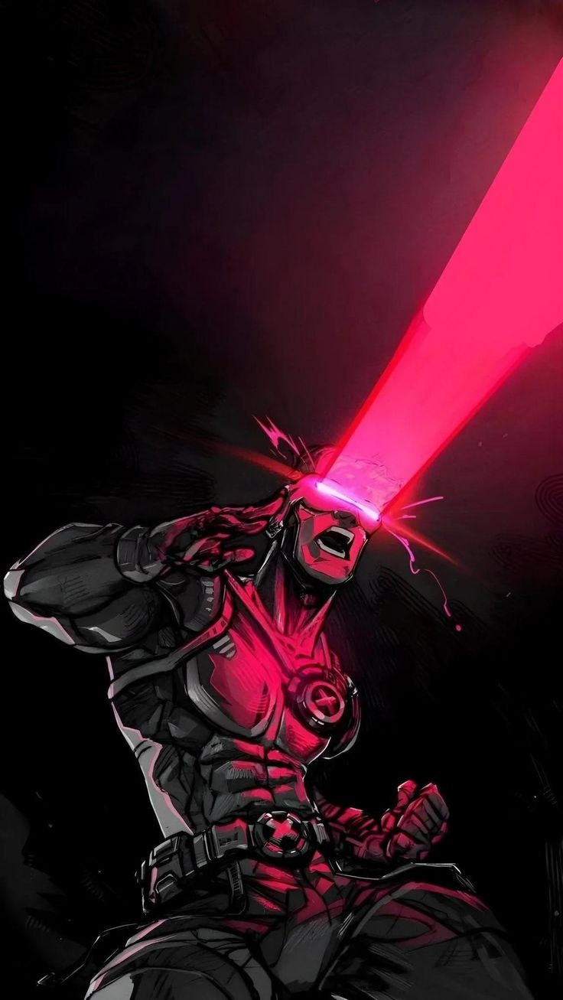
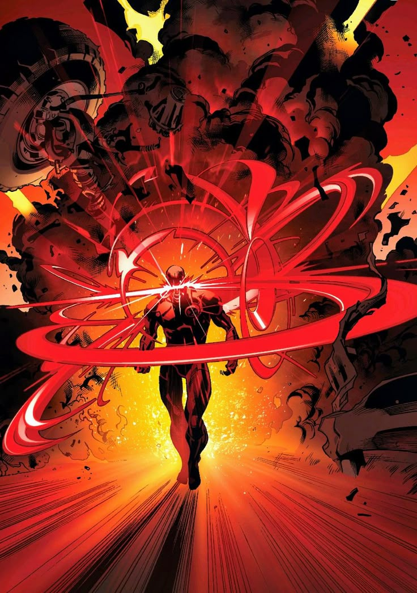
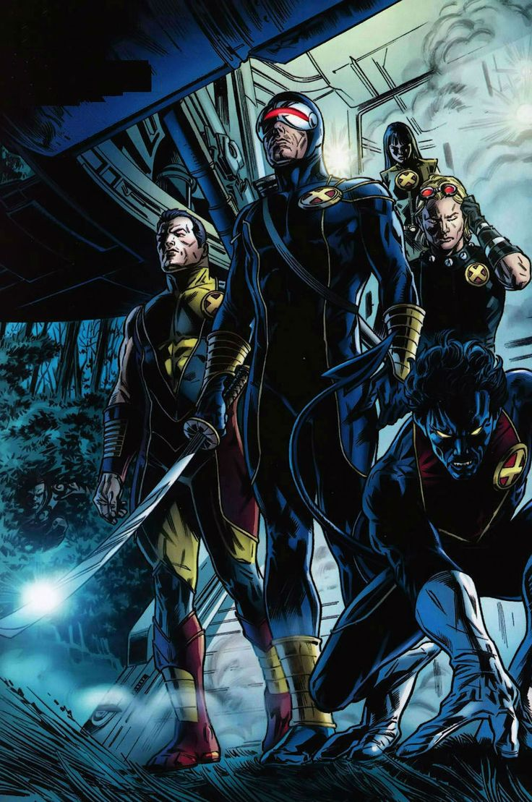
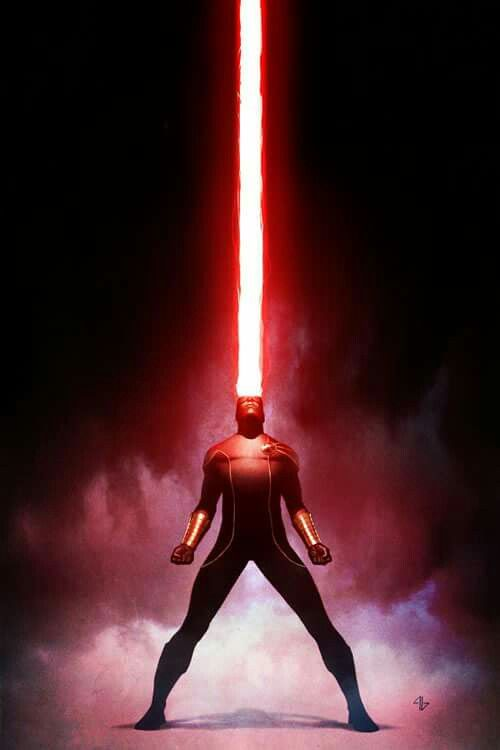
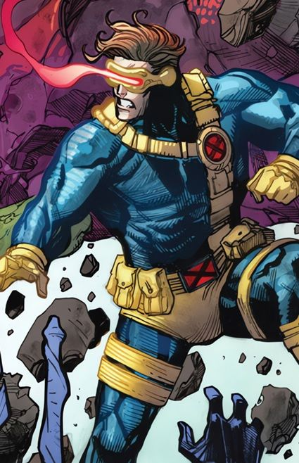
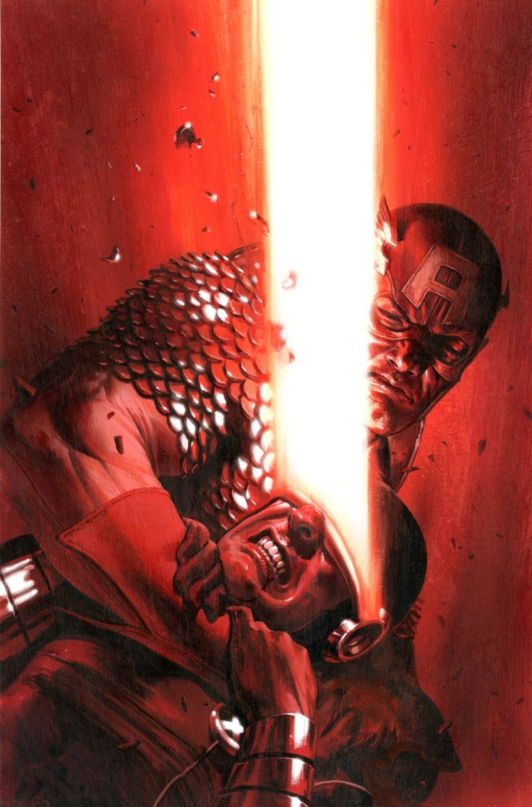
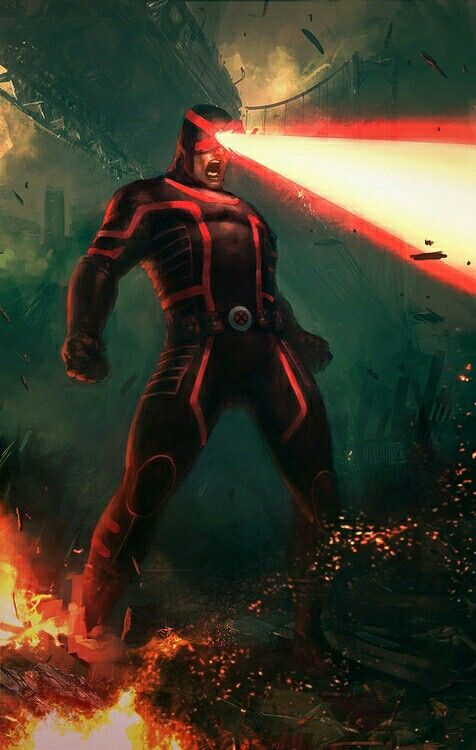
Personnalité :
Scott est souvent présenté comme le X-Man le plus sérieux, profondément engagé dans sa mission.
Il accorde une importance énorme à la discipline, la stratégie te à la protection des mutants.
Il est l'un des plus grand tacticiens de terrain de l'univers Marvel, anticipant les risques et planifiant plusieurs coups à l'avance.
Il est assez introverti et réservé. Il a du mal à exprimer ce qu'il ressent réellement et garde souvent ses émotions pour lui, ce qui peut lui donner un aspect froid et distant.
Il possède un sens moral fort, voire inflexible. Il souhaite faire ce qui est juste, souvent au prix de sacrifices personnels.
Capacités :
Scott Summers est un mutant capable de générer de puissantes rafales d'énergie à partir de ses yeux.
Le rayon est d'une couleur rougeâtre, et ne produit bizarrement aucune chaleur.
Ses yeux n'ont plus rien d'organique, mais sont en réalité une ouverture interdimensionnelle entre notre univers et un autre, qui est rempli d'énergie.
Les particules de cet univers, semblables à des photons, interagissent avec celles de notre univers en transférant de l'énergie cinétique sous la forme de gravitons.
Grâce aux cellules de son corps, Scott absorbe de manière constante l'énergie ambiante de son environnement, ce qui lui permet d'ouvrir cette porte dimensionnelle.
En complément de cette ouverture dimensionnelle, l'esprit de Scott créé un champ psionique qui est en phase avec les forces qui maintiennent les portes de cette dimension ouvertes.
Ce champ enveloppe son corps, renvoyant de lui-même les particules de l'autre dimension entrant en contact avec lui, le protégeant des effets de ses propres particules.
Il est immunisé aux pouvoirs de ses frères Havok et Vulcain, qui sont assez similaires, tout comme eux le sont aux siens.

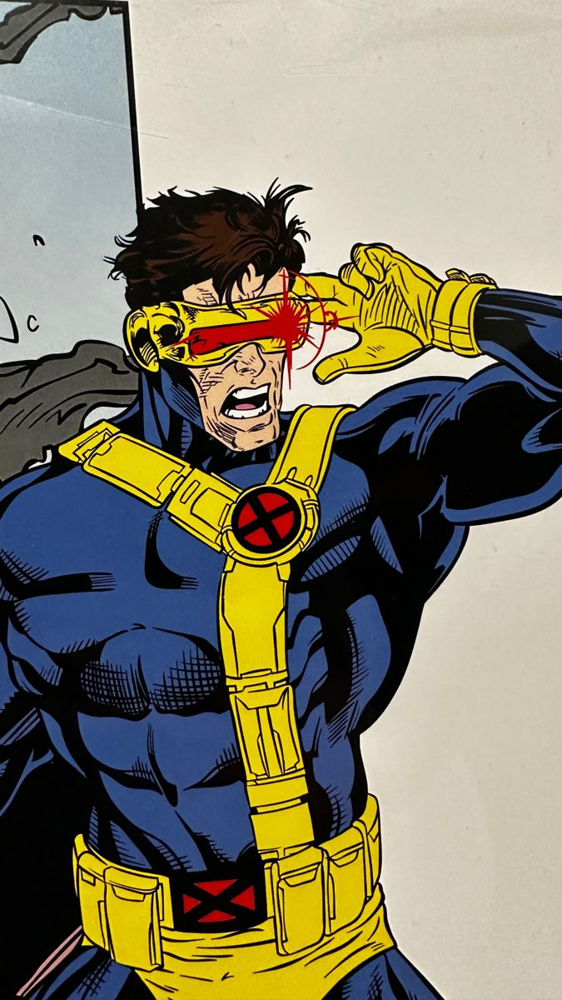
Costume :
La tenue la plus emblématique de Cyclope est composée d'une combinaison bleue avec des gants et des bottes jaunes, ainsi que des bretelles et un holster pour contenir ses batteries de viseur.
Il possède souvent un grand X jaune sur le torse où à la ceinture, ainsi qu'un viseur doré horizontal (ou des lunettes) rouges, en quartz rubis, pour maîtriser ses pouvoirs.
Les principaux ennemis de Cyclope


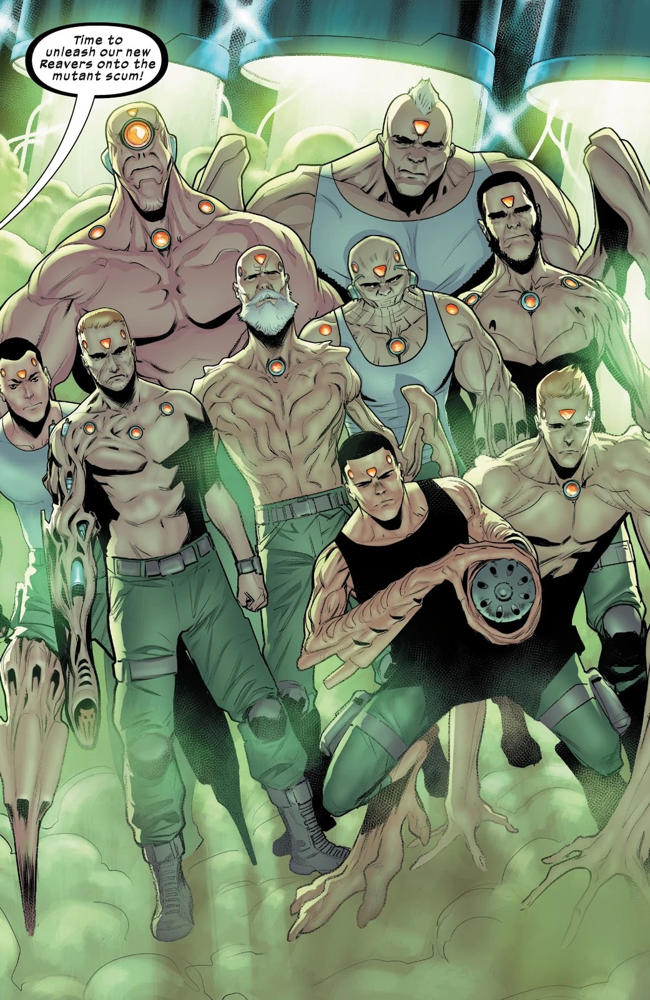


Équipes affiliées